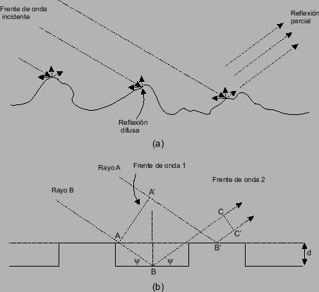
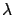
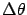
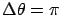
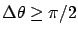
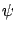
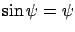
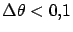
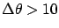

Siguiente: Propagación sobre terrenos irregulares
Subir: Propagación sobre una superficie
Anterior: Aproximación
Índice General
Propagación sobre una superficie
rugosa
En la sección anterior se consideró una superficie reflectora lisa y
entonces el análisis fue basado en la hipótesis de que se da una
reflexión perfecta en el punto en que la onda transmitida incide en
la superficie de la Tierra. Cuando la superficie es irregular, esta
hipótesis deja de ser realista dado que una superficie rugosa
presenta muchas facetas a- la onda incidente. En estas condiciones,
la caracterización mediante un simple coeficiente de reflexión no es
apropiada debido a que la naturaleza irregular de la superficie
resulta en una situación impredecible. Solo una pequeña fracción de
la energía incidente será reflejada en la dirección de la antena
receptora, y la onda reflejada en la superficie de la Tierra podrá
tener una contribución despreciable en la señal recibida.
En estas circunstancias es necesario definir qué constituye la
superficie rugosa. Claramente, una superficie que puede considerarse
rugosa a determinadas frecuencias y ángulos de incidencia puede
aproximarse a una superficie lisa si estos parámetros son
modificados. Una medida de la rugosidad es requerida para
cuantificar el problema, y el criterio comúnmente utilizado es el
criterio de Rayleigh. El problema se ilustra en la figura
3.3(a) y una idealización de la situación se ilustra
en la figura 3.3(b).
Se considera los dos rayos A y B de la figura 3.3(b).
El Rayo A es reflejado desde la parte superior de la superficie
rugosa y el Rayo B desde la parte inferior. En relación al frente de
onda AA' mostrado en la figura, la diferencia de distancia recorrida
entre los dos rayos cuando alcanzan los puntos C y C' luego de la
reflexión es:
Figura 3.3:
Reflexión en una superficie semi-rugosa: (a) situación de
terreno práctica, (b) modelo idealizado
|

|
La diferencia de fase entre C y C' es entonces:
Si la altura d es pequeña en comparación con 
entonces la diferencia de fase
 es también pequeña y
la superficie aparenta ser lisa. Por otro lado, la condición de
rugosidad extrema se da cuando
, los rayos
reflejados están en contrafase y tienden entonces a cancelarse. Un
criterio práctico para distinguir entre liso y rugoso es definir una
superficie rugosa como aquella para la cual se cumple
. Sustituyendo esta expresión en la ecuación
(3.13) se demuestra que para una superficie rugosa se
cumple:
En el caso de sistemas móviles  es siempre muy pequeño y es
admisible hacer la sustitución
. En estas
condiciones la ecuación (3.14) se reduce a:
En la práctica, la superficie de la Tierra se asemeja más a la
figura 3.3(a) que a la superficie idealizada de la
figura 3.3(b) y el valor comúnmente utilizado como
medida de la altura de la ondulación del terreno es  , la
desviación estándar de las irregularidades de la superficie en
relación a la altura media. El criterio de Rayleigh es expresado
entonces escribiendo la ecuación (3.13) como:
, la
desviación estándar de las irregularidades de la superficie en
relación a la altura media. El criterio de Rayleigh es expresado
entonces escribiendo la ecuación (3.13) como:
Para
 hay reflexión perfecta y la superficie
puede considerarse lisa. Para
 hay una alta
reflexión difusa y la onda reflejada es lo suficientemente pequeña
como para ser descartada.
Siguiente: Propagación sobre terrenos irregulares
Subir: Propagación sobre una superficie
Anterior: Aproximación
Índice General
SAPO